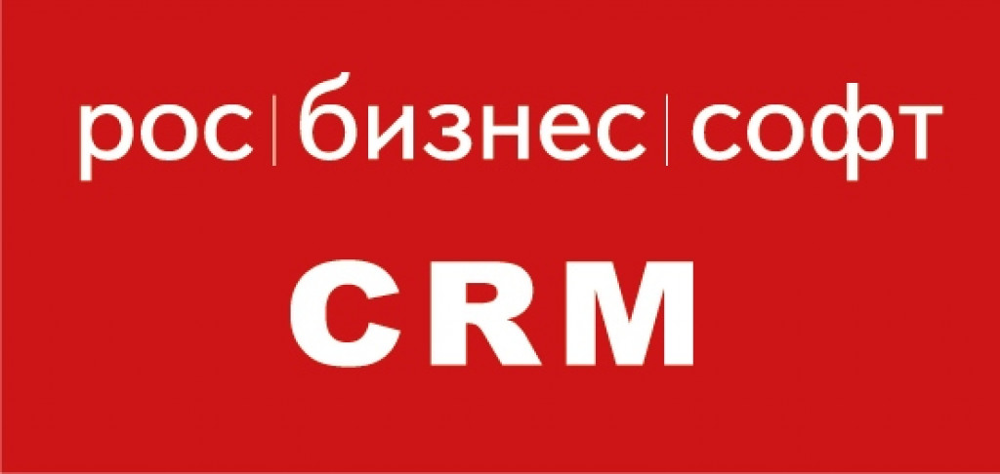

Информация о кафедре
Кафедра прикладной информатики как самостоятельное учебно-научное подразделение была создана 30 апреля 2004 года (приказ № К-5-331), и приступила к работе с 1 сентября того же года. Она выделилась из состава кафедры «Экономической кибернетики».
Возглавил кафедру доктор экономических наук, профессор,
действительный член (академик) международной академии наук высшей школы
(МАН ВШ) Землянский Адольф Александрович.
Преподаватели кафедры сотрудничают с ведущими фирмами,
азрабатывающими современные информационные системы и технологии: ООО «Компания БЭСТ», «1С»,
ООО «Аналитические технологии» BaseGroup Labs, SAS. Преподавателями кафедры разработаны и широко используются в учебном процессе
учебные пособия по работе с программными комплексами вышеназванных фирм, имеющие гриф УМО по образованию
в области производственного менеджмента.
В соответствии с соглашением о сотрудничестве №36/10, заключенным 25 марта 2010 года между компанией ООО «Аналитические технологии» и ФГБОУ ВО РГАУ-МСХА имени К.А. Тимирязева,
преподаватели кафедры обучают студентов современным технологиям анализа данных с использованием аналитической платформы Deductor.
В 2017 г. заключено соглашение с ООО «Онлайн-Менеджмент» об использовании в учебном процессе программного продукта «РосБизнесСофт CRM».
В развитии научных исследований и совершенствовании системы подготовки специалистов существенную роль играют международные связи кафедры.
Кафедра активно сотрудничает с Университетом имени Гумбольдта (г. Берлин, ФРГ), Университетом Хойенхайм (г. Штутгарт, ФРГ),
Университетом Вагенинген (г. Вагенинген, Нидерланды), Словацким аграрным университетом (г. Нитра, Словацкая Республика),
Институтом системных исследований АПК НАН Республики Беларусь (Минск), Институтом аграрного развития стран Центральной
и Восточной Европы (ИАМО) (г. Халле, ФРГ).
Партнеры кафедры
